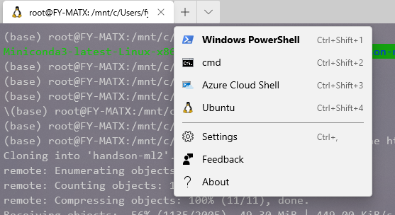
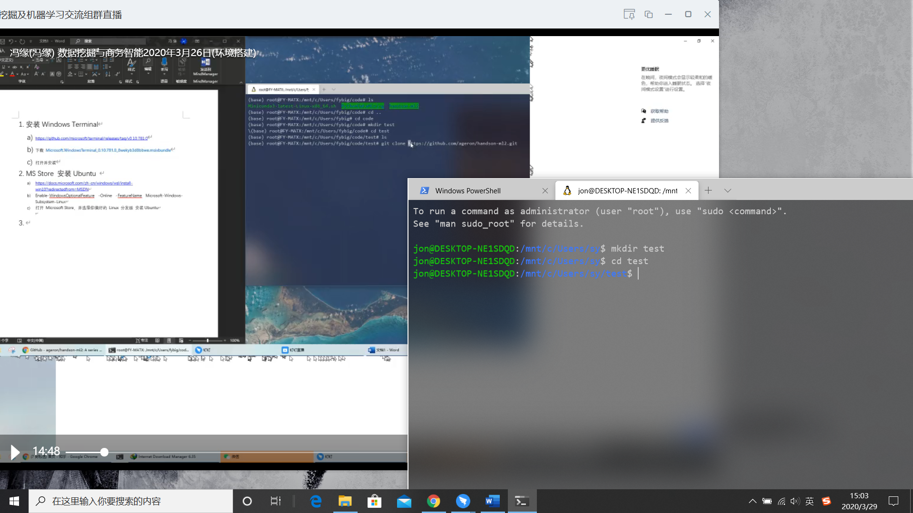
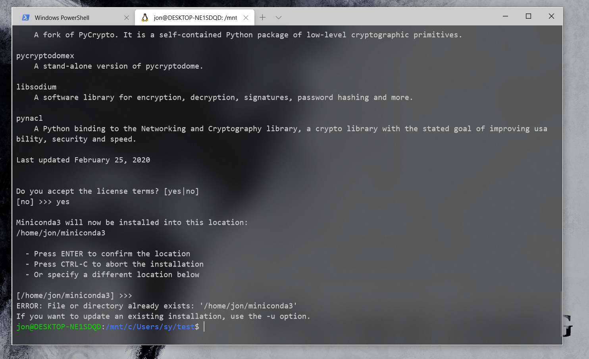
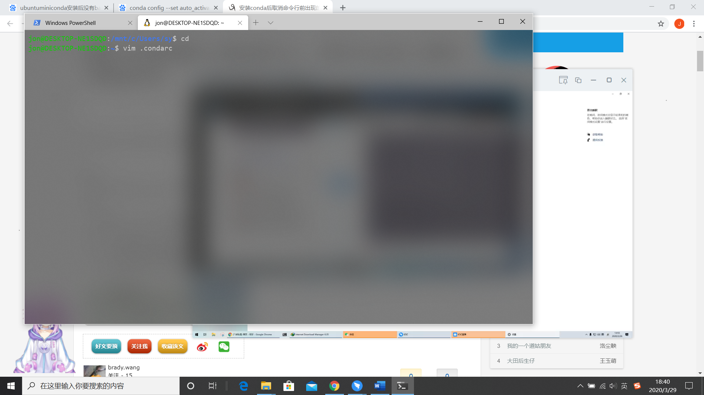
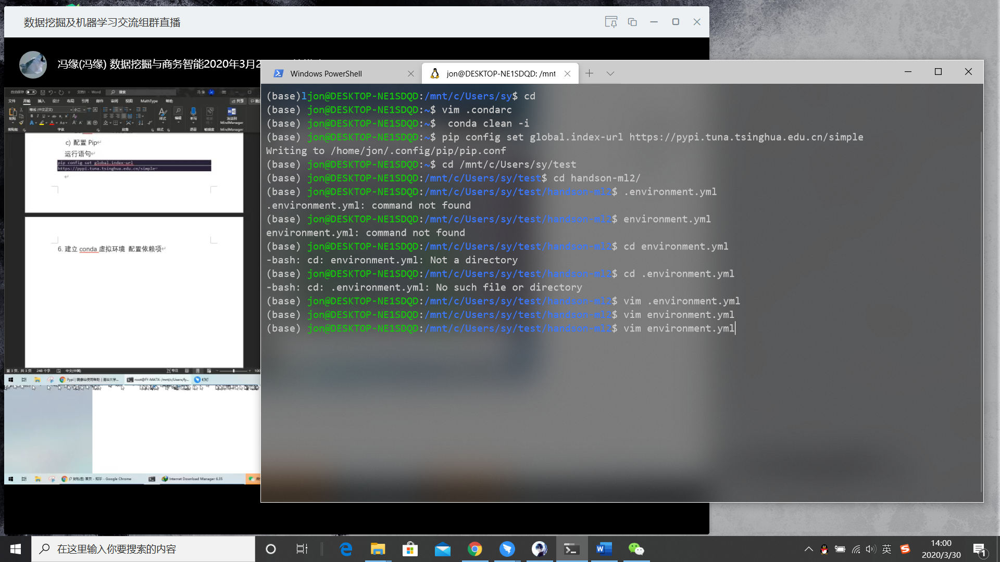
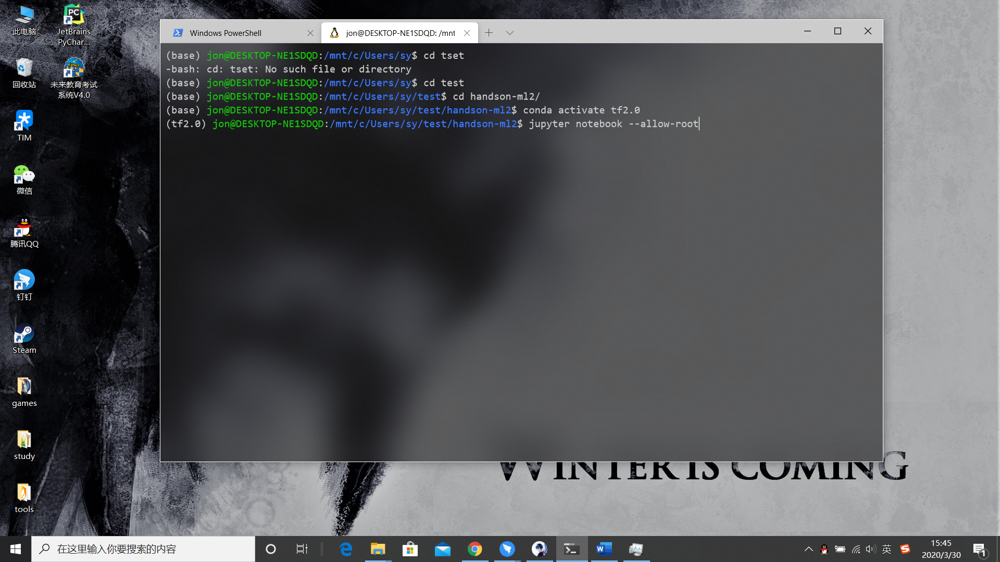
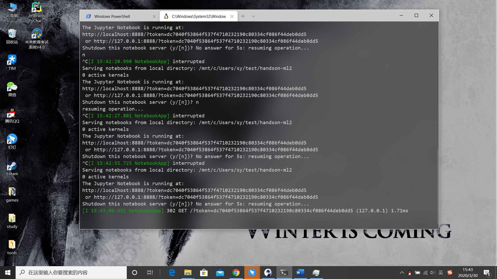

shaoyuan 大帅哥
那当然了
机器学习课环境配置
1.安装Windows Terminal
（什么是Windows terminal？https://blog.csdn.net/F8qG7f9YD02Pe/article/details/90035818 （有白色字体的字））
a)https://github.com/microsoft/terminal/releases/tag/v0.10.781.0
b)下载 Microsoft.WindowsTerminal_0.10.781.0_8wekyb3d8bbwe.msixbundlec)打开并安装
2.MS Store 安装Ubuntu
a)https://docs.microsoft.com/zh-cn/windows/wsl/install-win10?redirectedfrom=MSDN
b)Enable-WindowsOptionalFeature -Online -FeatureName Microsoft-Windows-Subsystem-Linux
c)打开 Microsoft Store，并选择你偏好的 Linux 分发版 安装Ubuntu
3.下载机器学习及数据挖掘源代码
a)打开Windows Terminal
b)选择Ubuntu

c)创建一个文件并进入

linux常用命令
按esc 输入：wq（保存）
cd 进入
cd.. 退出
ls 文件详情
https://www.cnblogs.com/yuncong/p/10247583.html#_label12
https://baike.baidu.com/item/%E5%91%BD%E4%BB%A4%E6%8F%90%E7%A4%BA%E7%AC%A6/998728?fromtitle=%E5%91%BD%E4%BB%A4%E8%A1%8C&fromid=196110&fr=aladdin
d)输入代码 从GitHub下载源代码
群里有，下载后解压把文件夹放到user/sy/test(自己创建的文件)git clone https://github.com/ageron/handson-ml2.gitgit clone https://github.com/LinXueyuanStdio/PythonDataMining.git
4.配置代码依赖环境 安装Miniconda（手机应用软件）
（什么是miniconda ：https://www.jianshu.com/p/67bf4d600c9e）
a)下载Miniconda （钉钉文件内有）
b)拷贝到工作目录下
c)添加执行权限并执行chmod +x Miniconda3-latest-Linux-x86_64.sh./Miniconda3-latest-Linux-x86_64.sh
d)安装Miniconda 并重启Terminal Ubuntu./Miniconda3-latest-Linux-x86_64.sh
cd h (再按tab自动补全)
一般来说conda装上后最前面会有（base）

这种情况最后 +-u 重新装
5. Conda及pip配置清华源
a)配置conda
https://mirror.tuna.tsinghua.edu.cn/help/anaconda/
b)复制以下内容(i +_右键 贴贴)
1 | channels: |
修改用户目录下的 .condarc 文件
运行conda clean -i 清除索引缓存

c)配置Pip
运行语句
1 | pip config set global.index-url |

建立conda虚拟环境 配置依赖项
d) cd handson-ml2
e)如果要使用GPU，请进行编辑environment.yml（或environment-windows.yml在Windows上）并替换tensorflow=2.0.0为tensorflow-gpu=2.0.0。还要替换tensorflow-serving-api==2.0.0为tensorflow-serving-api-gpu==2.0.0。
( 按 i 写入模式）
f)接下来，运行以下命令：$ conda env create -f environment.yml # or environment-windows.yml on Windows$ conda activate tf2

g) $ python -m ipykernel install –user –name=python3
h) 最后，启动Jupyter：
i) $ jupyter notebook
6.打开jupyter notebook

复制网址